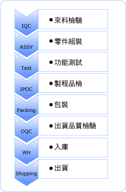
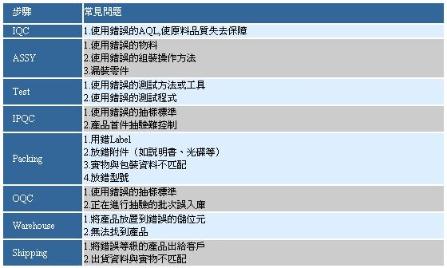
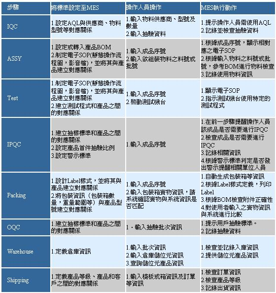

2007/08
柔性製造在組裝製造業中的應用
文-牟春林
隨著市場競爭全球化的日趨激烈，企業要生存發展，不得不持續改善生產過程中的各個環節，降低成本；更重要的是，要不斷推出新產品，保持或增加市場份額。新產品的不斷推出，一方面，對自身企業的管理和製造提出挑戰，另一方面，給供應商也帶來嚴峻考驗，要保證持續的客戶訂單，供應商就不得不研究如何降低成本和快速回應新產品的製造方法。整個產業鏈也因此進入了一個激烈的競爭迴圈狀態。
物競天擇，適者生存。如何應對市場的不確定性，如何應對客戶需求的多樣化和小批量性？柔性製造，從二十世紀五六十年代就開始慢慢被引入到製造領域。所謂柔性製造，即由一個傳輸系統聯繫起來的一些設備,傳輸裝置把工件放在其他聯結裝置上送到各加工設備,使工件加工準確、迅速和自動化。柔性製造使製造部門產品的迅速切換成為可能。幾十年以來，眾多企業一直致力於研究如何讓加工設備自動切換加工方式和功能，從而出現了CNC技術、自動刀具切換裝置等一系列高自動化的系統和設備，極大的提高了生產率。
組裝製造業也需要柔性製造 柔性製造，一直偏重於生產過程自動化的研究，非常適合半導體前段等自動化生產程度很高的生產過程。然而，作為“世界工廠”，更多企業看中的是中國大陸廉價的勞動力，將產品的組裝線陸續移至大陸。隨著工廠的增多，產業鏈初具規模。在這個產業鏈中，企業同樣會遇到產品多樣化，產品生命週期短等市場需求。要生存發展，組裝製造業同樣需要柔性製造！
組裝製造業產品的製造過程通常經過如下幾個步驟：

由此看來，組裝製造業的製造過程中更多的是操作人員的手工作業和測試機台的測試作業。要做到柔性製造，以下幾個方面要首先做到柔性： 1.機台柔性 當產品型號變更時，只需要更新機台相關參數或零部件即可實現加工新型號產品的能力。 2.生產工藝柔性 生產工藝在設計之處就應該考慮到適應多種產品或型號混線生產，同時保留可擴充性。 3.操作柔性 每個操作人員能掌握多種產品或型號的組裝或測試方法，對特定產品使用特定的操作方法。 4.資訊系統柔性 即相關資訊系統有高度的可維護和擴充性。
MES使柔性製造在組裝製造業中的應用成為可能 然而，只要有人為作業，就會有誤操作。在頻繁更換生產產品的過程中，各個步驟常常會出現以下問題：

利用MES進行輔助管控，能夠有效抑制以上問題的發生，從而使柔性製造在組裝製造業中的應用得以實現： 
註: 資通、資通電腦皆為資通公司之註冊商標。其他名稱及註冊商標分別為各相關公司所有。